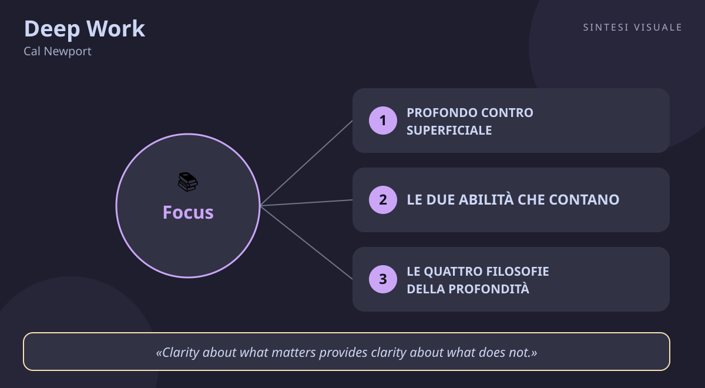

Deep Work
Cal Newport · Carriera e focus
«Deep Work»
- Profondo vs superficiale
- Due abilita
- Abbraccia la noia
- Prosciuga le acque basse
🧭Introduzione
Cal Newport non è un motivatore da palco: è un professore di informatica alla Georgetown University, che ha scritto questo libro senza mai avere un account sui social media. La sua urgenza era concreta: vedeva studenti, programmatori e professionisti circondati da email, riunioni e notifiche, convinti di lavorare tanto ma incapaci di produrre qualcosa di veramente difficile e originale. Uscito il 5 gennaio 2016 da Grand Central Publishing, il libro ha superato il milione di copie e ha dato un nome a un malessere che tutti sentivamo senza saperlo chiamare.
Perché conta oggi: viviamo nell'economia dell'attenzione frammentata — Slack, WhatsApp, feed infiniti. Chi sa concentrarsi davvero per ore su un problema difficile è diventato raro, e proprio per questo vale di più. In un mondo distratto, la concentrazione è diventata un superpotere economico.
A chi è utile: a chi fa lavoro di testa (programmatori, studenti, insegnanti, freelance, manager, creativi), a chi si sente sempre occupato ma mai produttivo, e a chi vuole fare carriera puntando sulla qualità invece che sulla reperibilità continua.
📘Riassunto
La scintilla centrale: la capacità di lavorare in concentrazione totale su compiti cognitivamente difficili è insieme sempre più rara e sempre più preziosa; chi la coltiva e ne fa il centro della propria vita lavorativa prospererà, gli altri resteranno intrappolati nel lavoro superficiale.
La struttura logica procede in due parti:
- La tesi (parte prima) — perché il lavoro profondo conta: solo la concentrazione senza distrazioni permette di imparare in fretta cose difficili e di produrre a livello élite. Newport porta esempi memorabili — da Carl Jung che si ritirava nella sua torre di pietra nel bosco per pensare, al pioniere dei social che compra un biglietto aereo per Tokyo solo per scrivere indisturbato — e smonta il mito che la connessione continua renda produttivi.
- Le quattro regole (parte seconda) — il programma pratico: 1) lavora in profondità (rituali e routine), 2) abbraccia la noia (allena il muscolo dell'attenzione), 3) lascia i social (riprenditi l'attenzione), 4) prosciuga le acque basse (riduci al minimo il lavoro superficiale).
Il punto di svolta: la regola 2, "abbraccia la noia". Il lettore capisce che il problema non è solo organizzativo (dove trovo due ore libere?) ma neurologico: se riempi ogni attesa con il telefono, il cervello disimpara a concentrarsi anche quando ne avresti bisogno. Da lì tutto cambia: non basta chiudere le notifiche, bisogna riallenare la mente a tollerare la noia.
L'eredità oggi: il libro ha creato un vocabolario condiviso (deep/shallow work, attention residue) usato in aziende e università; ha ispirato il minimalismo digitale e il time-blocking, ed è diventato il manuale di riferimento per chi vuole fare carriera puntando su competenza rara invece che su visibilità continua.
💡Concetti chiave
- Profondo contro superficiale: il lavoro profondo crea valore nuovo ed è difficile da replicare; quello superficiale (email, riunioni, pratiche) è facile e sostituibile.
- Le due abilità che contano: imparare in fretta cose difficili e produrre a livello élite, per qualità e velocità.
- Le quattro filosofie della profondità: monastica, bimodale, ritmica e giornalistica — quattro modi diversi di ritagliarsi il tempo per pensare.
- Abbraccia la noia: la concentrazione è un muscolo; se lo abitui alla distrazione continua, si indebolisce anche sul lavoro.
- Lascia (o addomestica) i social: ogni strumento va giudicato per costi e benefici reali, non perché "tutti lo usano".
- Prosciuga le acque basse: pianifica ogni minuto, misura la profondità dei compiti e finisci presto per lavorare meglio.
📖1. Profondo contro superficiale
Definizione il lavoro profondo sono le attività svolte in concentrazione senza distrazioni che spingono le capacità cognitive al limite (scrivere, programmare, studiare, progettare); quello superficiale sono compiti logistici poco impegnativi, spesso fatti distrattamente (email, riunioni di aggiornamento, burocrazia), che creano poco valore e sono facili da replicare. Esempio due ore a scrivere una proposta commerciale senza telefono valgono più di otto ore passate a rispondere a email e messaggi "tanto per restare sul pezzo": la prima attività fa vincere la gara, la seconda fa solo sentire occupati. Come applicarlo (a) elenca i tuoi compiti tipici di una settimana; (b) segna con D quelli che richiedono testa e silenzio e con S quelli logistici; (c) proteggi ogni giorno almeno un blocco da 60-90 minuti per un solo compito D, telefono in un'altra stanza. Errore comune scambiare l'essere reperibili con l'essere produttivi ("rispondo subito a tutto, quindi lavoro bene") — è la trappola dell'operosità visibile come surrogato della produttività. Collegamento la flow experience di Mihaly Csikszentmihalyi (la soddisfazione nasce quando mente e corpo sono tesi verso qualcosa di difficile e degno); Cal Newport ci tornerà anche in Digital Minimalism.
📖2. Le due abilità che contano
Definizione per prosperare nell'economia attuale servono due capacità: padroneggiare in fretta cose difficili (nuovi linguaggi, strumenti, mercati) e produrre risultati di qualità élite in tempi ragionevoli. Entrambe richiedono concentrazione profonda: imparare davvero è un atto di deep work. Esempio un commerciale che in tre settimane impara a usare bene un CRM nuovo e scrive da solo analisi chiare sui clienti diventa insostituibile; chi aspetta il corso aziendale e copia i colleghi resta intercambiabile. Come applicarlo (a) chiediti quale competenza difficile varrebbe di più per te nei prossimi 12 mesi; (b) dedicagli 3-4 blocchi profondi a settimana per 2 mesi; (c) misura il progresso con un prodotto concreto (un progetto, un esame, un prototipo), non con le ore "studiate". Errore comune collezionare certificati facili e tutorial guardati a metà, confondendo l'esposizione passiva con l'apprendimento (che richiede sforzo, errori e ripetizione concentrata). Collegamento Carol Dweck (Mindset) sull'imparare dai compiti difficili; Anders Ericsson sulla pratica deliberata: i miglioramenti arrivano solo fuori dalla zona di comfort.
📖3. Le quattro filosofie della profondità
Definizione quattro strategie per integrare il lavoro profondo nella vita: monastica (elimini quasi tutto il resto per un periodo), bimodale (alterni periodi profondi e periodi normali, es. un giorno a settimana isolato), ritmica (stesso slot ogni giorno, es. 8-11 del mattino), giornalistica (ritagli profondità dove capita, quando si libera un buco). Esempio un insegnante non può sparire per un mese (monastica impossibile), ma può fare ritmica: ogni mattina dalle 6 alle 7:30 prepara lezioni e corregge compiti difficili prima che la casa si svegli. Un freelance può fare bimodale: il venerdì niente chiamate, solo progetto principale. Come applicarlo (a) valuta quanto controllo hai sulla tua agenda; (b) se è poco, parti dalla ritmica (stessa ora, stesso posto, catena di giorni); (c) comunica la regola agli altri ("al mattino non rispondo prima delle 11") così la profondità diventa un appuntamento rispettato. Errore comune copiare la filosofia di qualcun altro (lo scrittore isolato nel bosco) invece di scegliere quella compatibile con il tuo lavoro; oppure non sceglierne nessuna e sperare che "quando avrò tempo" arrivi da sé. Collegamento James Clear (Atomic Habits) sul potere dei rituali che riducono la forza di volontà necessaria; la "legge delle 4 ore" citata da Newport: oltre le 4 ore giornaliere di profondità vera, quasi nessuno regge.
📖4. Abbraccia la noia
Definizione la capacità di concentrarti dipende da come tratti la mente nei momenti vuoti: se ogni attesa (fila, semaforo, pubblicità) la riempi col telefono, alleni il cervello a fuggire appena un compito diventa noioso — e poi fugge anche sul lavoro importante. Esempio aspetti il bus e invece di scrollare resti lì a guardare la strada e a ripensare al problema di stamattina: è scomodo per cinque minuti, ma nel pomeriggio ti accorgi che resisti mezz'ora in più su un compito difficile senza controllare il telefono. Come applicarlo (a) programma pause da Internet (es. niente telefono nei tragitti e a tavola); (b) quando senti l'impulso di controllare, aspetta 5 minuti "per noia programmata"; (c) tieni un taccuino per le idee che emergono nella noia, così la mente impara che annoiarsi paga. Errore comune credere che basti "staccare la sera" mentre di giorno si passa da uno stimolo all'altro senza sosta; il muscolo dell'attenzione si allena tutto il giorno, non solo durante il lavoro. Collegamento gli studi sull'attention residue di Sophie Leroy (ogni cambio di compito lascia un residuo che sporca la concentrazione successiva); la meditazione mindfulness come palestra della stessa capacità.
📖5. Lascia (o addomestica) i social
Definizione Newport propone il test del "tuttofare": usa uno strumento di rete solo se i suoi benefici per i tuoi obiettivi fondamentali superano ampiamente i costi in attenzione — altrimenti lascialo. Non basta che "serva un po'": deve servire molto, perché il costo è alto. Esempio tieni Instagram "per lavoro" ma in un mese ti ha portato zero clienti e 40 ore di scroll: il bilancio è negativo. Meglio cancellarlo dal telefono e controllare la pagina aziendale una volta a settimana da computer, su appuntamento. Come applicarlo (a) elenca gli strumenti che usi (social, chat, newsletter); (b) per ciascuno scrivi beneficio concreto e costo in tempo/attenzione; (c) elimina o confina i peggiori per 30 giorni e osserva cosa cambia davvero — quasi mai succede qualcosa di grave. Errore comune difendere ogni strumento con il "non si sa mai" (e se mi perdessi un'opportunità?) senza mai calcolare il costo certo pagato ogni giorno in cambio di un beneficio ipotetico. Collegamento il Digital Minimalism dello stesso Newport; il principio di Pareto applicato all'attenzione: pochi strumenti danno quasi tutto il valore.
📖6. Prosciuga le acque basse
Definizione il lavoro superficiale va contenuto con un budget: pianifica ogni minuto della giornata in blocchi, misura la profondità di ogni attività (quanto ci vorrebbe a formare un neolaureato per farla?) e imponiti di finire presto — il vincolo di tempo costringe a scegliere cosa conta davvero. Esempio invece di una giornata "a reazione" tra email e urgenze, blocchi l'agenda: 9-11 proposta cliente, 11-11:30 email, 14-15:30 progetto, 16-17 chiamate. Alle 17:30 chiudi davvero: sapendo di avere poco tempo, durante i blocchi non divaghi. Come applicarlo (a) ogni mattina pianifica la giornata in blocchi da 30-60 minuti; (b) fissa un tetto alle ore di superficiale (es. max 2 al giorno) e un orario di chiusura serale non negoziabile; (c) se un'attività superficiale la può fare un neolaureato in poche settimane, delegala, automatizzala o accorpala. Errore comune pianificare solo il lavoro e lasciare i buchi "liberi", che il superficiale colonizza subito; oppure fissare la chiusura serale ma controllando email fino a mezzanotte "solo un attimo". Collegamento David Allen (Getting Things Done) sul catturare tutto fuori dalla testa per liberare la mente; la regola "schedule every minute of your day" è cugina del time-boxing degli agilisti.
💬Citazioni da ricordare
"The ability to perform deep work is becoming increasingly rare at exactly the same time it is becoming increasingly valuable in our economy. As a consequence, the few who cultivate this skill, and then make it the core of their working life, will thrive." — la tesi del libro in una frase: rarità più valore uguale vantaggio per chi ci investe.
"Deep Work: Professional activities performed in a state of distraction-free concentration that push your cognitive capabilities to their limit. These efforts create new value, improve your skill, and are hard to replicate." — la definizione ufficiale: se non spinge le tue capacità al limite e si può copiare facilmente, non è profondo.
"Clarity about what matters provides clarity about what does not." — sapere cosa conta è il filtro che rende automatiche tutte le rinunce: chi ha chiaro l'obiettivo non deve sforzarsi di dire no al resto.
🌍Esempi di oggi
- Il gruppo WhatsApp dei colleghi. Cento messaggi al giorno, quasi tutti reazioni ed emoji: sembra partecipazione, ma è lavoro superficialissimo. Chi silenzia il gruppo e lo legge due volte al giorno in 10 minuti recupera un'ora di attenzione — la reperibilità continua non è collaborazione, è interruzione condivisa.
- Lo studente con tre schermi aperti. Libro, video-lezione in sottofondo e chat con gli amici: dopo tre ore "di studio" non ricorda quasi nulla. Un'ora sola col telefono in un'altra stanza e un foglio per riassumere a mano produce di più — l'apprendimento vero non tollera il multitasking.
- La domenica sera divorata dalle email. Controllare la posta "per partire avvantaggiati lunedì" ruba al cervello il riposo di cui ha bisogno per consolidare idee e ricaricare l'attenzione. Chi chiude davvero nel weekend arriva lunedì più lucido — il riposo protetto fa parte del lavoro profondo, non è il suo nemico.
🛠️Azioni pratiche
- Il blocco sacro (5 minuti per pianificare, poi 60-90 minuti al giorno): scegli un compito profondo e fissa ogni giorno stesso orario e stesso posto, telefono in un'altra stanza. Segna i giorni riusciti su un calendario: l'obiettivo è una catena di 5 giorni.
- La dieta della noia (tutta la settimana): niente telefono in fila, ai semafori, a tavola e nei primi 30 minuti dopo il risveglio. Tieni un foglietto in tasca: ogni idea o voglia di controllare che emerge nella noia finisce lì, non sullo schermo.
- Il bilancio degli strumenti (30 minuti, una volta): elenca social, chat e newsletter; per ciascuno scrivi un beneficio misurabile dell'ultimo mese. Quello con zero benefici esce dal telefono per 30 giorni: se il lavoro non ne risente, lascialo fuori.
💎Da portare a casa
Non serve lavorare di più: serve difendere ogni giorno un pezzo di attenzione per ciò che solo tu puoi fare in profondità.
💬Approfondimento in chat
Rispondi con il numero (1-6) del concetto che vuoi espandere ulteriormente, oppure con un tema a cui vuoi dedicare il prossimo libro: public speaking, vendite, negoziazione, stress, emozioni, carriera...
🖼️In un colpo d’occhio

Tocca l’immagine per ingrandirla.